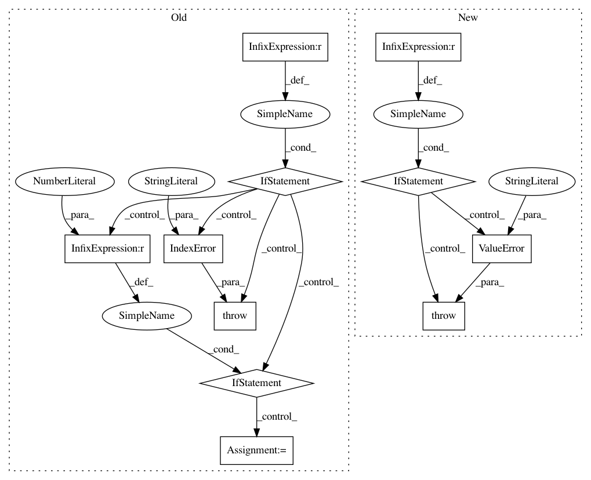

ea36b28c92b4f5f8314707051ee936fd2393bfd5,pmdarima/utils/array.py,,diff_inv,#Any#Any#Any#Any#,318
Before Change
if xi is None:
xi = np.ndarray(shape=[1, lag * differences], dtype=float)
if xi.shape[1] != (lag * differences):
raise IndexError(""xi" does not have the right length")
if differences == 1:
n = x.shape[0]
// R code: if(is.na(n))
// R code: stop(gettextf("invalid value of %s", "length(x)"),
// R code: domain = NA)
if np.isnan(n):
raise IndexError("invalid value of for length(x)")
return C_intgrt_vec(x=x, xi=xi, lag=lag)
else:
// R code: diffinv.vector(diffinv.vector(x, lag, differences - 1L,
// R code: diff(xi, lag=lag, differences=1L)),
// R code: lag, 1L, xi[1L:lag])
diff_inv(
x=diff_inv(x=x, lag=lag, differences=differences-1,
xi=diff(x=xi, lag=lag, differences=1)),
lag=lag,
differences=1,
xi=xi[1:lag + 1] // R includes the top index, Python does not
)
def is_iterable(x):
Test a variable for iterability.
Determine whether an object ``x`` is iterable. In Python 2, this
After Change
if x.ndim == 1:
return _diff_inv_vector(x, lag, differences, xi)
elif x.ndim == 2:
return _diff_inv_matrix(x, lag, differences, xi)
raise ValueError("only vector and matrix inverse differencing "
"are supported")
def is_iterable(x):
Test a variable for iterability.
In pattern: SUPERPATTERN
Frequency: 3
Non-data size: 11
Instances
Project Name: tgsmith61591/pmdarima
Commit Name: ea36b28c92b4f5f8314707051ee936fd2393bfd5
Time: 2019-11-25
Author: tgsmith61591@gmail.com
File Name: pmdarima/utils/array.py
Class Name:
Method Name: diff_inv
Project Name: interactiveaudiolab/nussl
Commit Name: d5f74cc30a8f0a192d5ef8818c6d72c3707c4a97
Time: 2017-02-04
Author: ethanmanilow@gmail.com
File Name: nussl/audio_signal.py
Class Name: AudioSignal
Method Name: load_audio_from_file
Project Name: interactiveaudiolab/nussl
Commit Name: efc54499191ead69f875877badd3578c60eba7a6
Time: 2017-02-08
Author: ethanmanilow@gmail.com
File Name: nussl/audio_signal.py
Class Name: AudioSignal
Method Name: load_audio_from_file